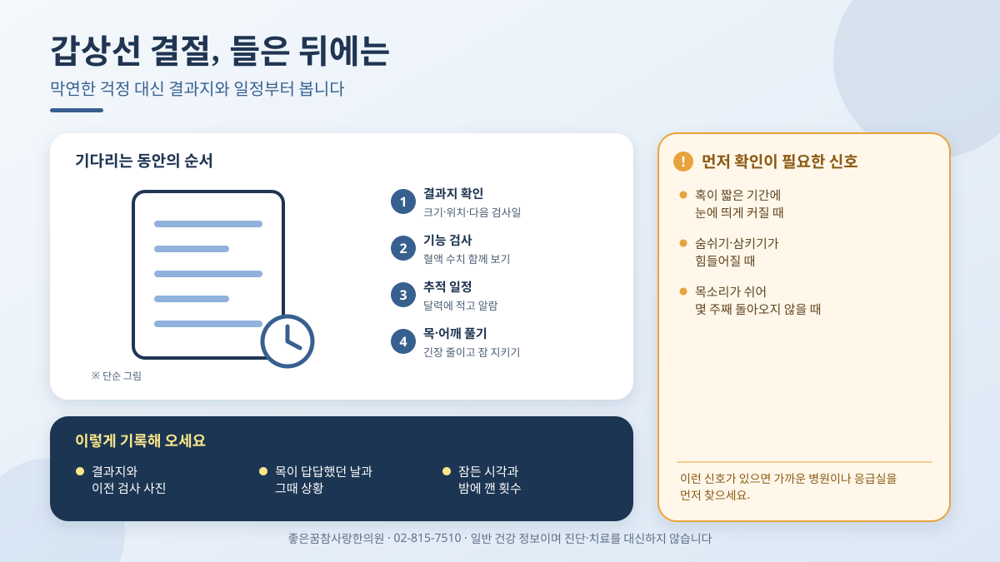

이종호 한의사 감수좋은꿈참사랑한의원 대표원장 (한의사 면허번호 19769)발행 2026-11-26 · 수정 2026-11-26
이 글의 차례
건강검진 결과지를 펼쳤는데 '갑상선 결절, 추적 관찰 권함'이라는 줄이 눈에 들어옵니다. 목에 혹이 있다는 말이구나 싶어 거울 앞에서 목을 만져 보지만 아무것도 느껴지지 않습니다. 그날 밤 검색창에 같은 말을 몇 번이고 넣어 보다가 잠을 설치셨다는 이야기를 진료실에서 자주 듣습니다.
결절이라는 말은 갑상선 안에 주변과 조금 다르게 보이는 덩어리가 있다는 뜻입니다. 초음파 기계가 좋아지고 검진에서 목 초음파를 많이 하게 되면서, 결절을 발견하는 분이 무척 많아졌습니다. 그만큼 흔하게 보이는 소견이고, 대부분은 정기적으로 지켜보는 것으로 충분한 경우가 많다고 알려져 있습니다.
그래도 걱정이 줄지 않는 것은 당연합니다. 내 몸 안에 무언가가 있다는 사실만으로도 마음이 무거워지니까요. 이 글에서는 결절을 들은 뒤 어떤 순서로 확인하는지, 그리고 기다리는 동안 생활을 어떻게 꾸려 가면 좋은지를 차근차근 말씀드리려 합니다.
먼저 분명히 해 둘 것이 있습니다. 결절의 성격을 판단하고 추적 간격을 정하는 일은 내분비내과나 갑상선을 보는 외과의 몫입니다. 한의원은 그 길을 대신하지 않고, 기다리는 시간 동안의 잠과 긴장, 목과 어깨의 불편을 곁에서 함께 살피는 자리입니다.
갑상선 결절은 어떤 것인가요
갑상선은 목 앞쪽, 울대뼈 아래에 나비 모양으로 자리 잡은 기관입니다. 몸의 대사 속도를 조절하는 호르몬을 만들어 체온, 심장 박동, 장의 움직임, 기운에 두루 영향을 줍니다. 결절은 이 갑상선 조직 안에 생긴 작은 덩어리를 통틀어 부르는 말입니다.
결절은 안이 물로 찬 것, 조직으로 꽉 찬 것, 둘이 섞인 것 등 모양이 다양합니다. 초음파에서는 크기, 경계가 매끈한지, 안에 작은 석회가 보이는지, 모양이 세로로 긴지 같은 특징을 보고 추적 간격이나 추가 검사가 필요한지를 정합니다.
결절이 있다고 해서 갑상선 기능이 꼭 달라지는 것은 아닙니다. 기능 검사가 정상인 결절도 많고, 결절과 별개로 기능 저하나 항진이 함께 있는 경우도 있습니다. 그래서 초음파 결과와 혈액 검사 결과를 따로 나눠서 이해하시면 덜 헷갈리십니다.
왜 결절이 생기는지, 왜 이렇게 자주 발견되는지
결절이 생기는 이유는 한 가지로 정리되지 않습니다. 나이가 들면서 갑상선 조직이 고르지 않게 자라기도 하고, 가족 가운데 갑상선 질환이 있는 경우, 갑상선에 염증이 있었던 경우 등 여러 배경이 거론됩니다. 생활 하나를 잘못해서 생겼다고 자책하실 일은 아닙니다.
자주 발견되는 까닭은 검사가 섬세해졌기 때문이기도 합니다. 예전 같으면 모르고 지나갔을 작은 결절도 이제는 검진 초음파에서 쉽게 보입니다. 여성에게 더 흔하다고 알려져 있고, 나이가 들수록 발견되는 비율이 높아지는 경향이 있습니다.
그래서 결절이라는 말을 들었을 때 가장 먼저 필요한 것은 막연한 걱정이 아니라 정확한 결과지입니다. 크기와 모양을 어떻게 적어 두었는지, 다음 검사를 언제 하라고 했는지를 확인하는 것이 출발점입니다.
결과지에 적힌 말은 어떻게 읽나요
검진 결과지에는 결절의 크기가 밀리미터나 센티미터로 적혀 있고, 오른쪽인지 왼쪽인지 위치가 함께 적혀 있습니다. 병원에 따라 결절의 위험도를 등급으로 나눠 적기도 하는데, 이 등급에 따라 추적 간격이나 세침 흡인 검사 여부가 달라집니다.
세침 흡인 검사는 가는 바늘로 결절의 세포를 조금 뽑아 살펴보는 검사입니다. 모든 결절에 하는 것은 아니고, 크기와 모양을 보고 필요하다고 판단될 때 권합니다. 검사를 권받으셨다면 너무 미루지 말고 일정을 잡으시는 것이 마음에도 편합니다.
추적 관찰을 권받으셨다면 보통 정해진 간격으로 초음파를 다시 보며 크기나 모양이 달라지는지를 지켜봅니다. 이전 결과지를 버리지 말고 모아 두시면, 다음 검사 때 비교가 훨씬 쉬워집니다.
결절과 헷갈리기 쉬운 목의 불편
결절이 있다는 말을 들은 뒤로 목이 답답하거나 뭔가 걸린 느낌이 든다고 말씀하시는 분이 많습니다. 실제로 결절이 커서 누르는 경우도 있지만, 작은 결절인데도 이런 느낌이 드는 경우가 꽤 있습니다. 걱정과 긴장이 목의 감각을 예민하게 만들기 때문입니다.
목에 무언가 걸린 듯한 느낌은 역류성 식도염이나 후두 쪽 자극, 긴장으로 목 앞 근육이 굳은 경우에도 생깁니다. 한의학에서는 이런 느낌을 매핵기라고 부르며 마음의 긴장과 함께 살펴 왔습니다. 무엇 때문인지는 진찰과 검사를 함께 보아야 알 수 있습니다.
목 옆이나 뒤가 뻐근한 것은 대개 결절보다 자세와 근육의 문제인 경우가 많습니다. 결절 걱정으로 자꾸 목을 만지고 고개를 숙여 거울을 보는 습관도 목과 어깨를 굳게 만들 수 있으니, 만져 보는 횟수를 줄이는 것도 도움이 됩니다.
기다리는 동안 마음이 더 힘들 때
추적 관찰은 말 그대로 기다리는 일입니다. 다음 검사까지 몇 달에서 1년을 지내야 할 때도 있어서, 그사이 불안이 커지는 분이 많습니다. 검사 날짜가 다가올수록 잠이 얕아지고 소화가 더딘 것도 흔한 반응입니다.
이럴 때는 걱정을 없애려 애쓰기보다 걱정할 시간을 정해 두는 편이 도움이 될 수 있습니다. 궁금한 점은 수첩에 적어 두었다가 다음 진료 때 한꺼번에 물어보시고, 밤늦게 검색하는 습관은 줄여 보세요. 정보를 많이 찾을수록 마음이 더 흔들리는 경우가 많습니다.
같은 결절을 가진 사람들의 이야기를 찾아 읽다 보면 내 경우와 다른 이야기에 겁을 먹기 쉽습니다. 결절은 크기와 모양, 검사 결과가 저마다 다르니, 내 결과지를 기준으로 담당 선생님과 이야기하는 것이 가장 정확합니다.
결절이 있을 때 갑상선 기능은 어떻게 함께 보나요?
초음파가 갑상선의 모양을 보는 검사라면, 혈액 검사는 갑상선이 일을 얼마나 하고 있는지를 보는 검사입니다. 결절을 발견하면 기능 검사를 함께 권하는 경우가 많은데, 결절이 호르몬을 지나치게 만들고 있지 않은지, 바탕에 염증이 있지 않은지를 확인하기 위해서입니다.
기능이 정상이라면 몸의 대사 속도에는 큰 변화가 없다는 뜻이니, 피곤하거나 추위를 타는 증상이 있다면 다른 이유도 함께 살펴봐야 합니다. 잠이 부족하거나, 끼니가 불규칙하거나, 빈혈이 있거나, 마음이 지쳐 있을 때도 비슷한 느낌이 들 수 있기 때문입니다.
반대로 기능 검사에서 수치가 달라져 있다면 그에 맞는 진료가 결절 추적과 나란히 이어집니다. 이때는 두근거림, 손 떨림, 체중 변화, 땀, 변비나 잦은 변 같은 몸의 신호를 기록해 두시면 담당 선생님과 이야기할 때 도움이 됩니다.
추가 검사나 시술을 권받았다면
세침 흡인 검사 결과에 따라 한 번 더 검사를 하거나, 결절의 크기와 성격에 따라 시술이나 수술을 상의하게 되는 경우도 있습니다. 이 결정은 결과를 직접 본 갑상선 진료 선생님과 충분히 이야기한 뒤 내리시는 것이 맞습니다.
결정을 앞두고 마음이 복잡할 때는 궁금한 점을 미리 적어 가 보세요. 지금 바로 해야 하는지, 지켜볼 수 있는 기간은 어느 정도인지, 다른 선택지는 무엇인지, 이후 일상은 어떻게 달라지는지 같은 질문입니다. 적어 가면 진료실에서 놓치는 이야기가 줄어듭니다.
시술이나 수술 뒤 회복 기간에 목과 어깨가 굳거나, 잠이 얕아지거나, 기운이 처지는 분도 계십니다. 이때도 담당 병원의 안내를 먼저 따르시고, 회복 흐름에 맞춰 한의원에서 함께 살필 수 있는 부분을 상의하시면 됩니다.
결절이 있는 분들이 자주 헷갈리는 것
첫째, 결절이 있으면 목을 많이 쓰거나 말을 많이 하면 안 된다는 생각입니다. 평소처럼 말하고 노래하는 일이 결절을 키운다고 보기는 어렵습니다. 목이 답답하다면 오히려 물을 자주 마시고 어깨를 풀어 주는 편이 도움이 됩니다.
둘째, 아무 느낌이 없으니 다음 검사는 건너뛰어도 된다는 생각입니다. 결절은 대부분 만져지지도 않고 아프지도 않습니다. 느낌이 아니라 정해진 간격에 맞춰 검사를 받는 것이 추적 관찰의 핵심입니다.
셋째, 결절이 있으니 피곤한 것은 다 결절 때문이라는 생각입니다. 피로는 잠과 끼니, 빈혈, 마음의 지침 등 여러 이유가 겹쳐 생기는 경우가 많아서, 하나씩 나눠 살펴보는 것이 좋습니다.
먼저 이렇게 여쭙니다
처음 오시면 대략 이런 내용을 여쭙니다. 미리 정리해 오시면 진료가 한결 수월해집니다.
- 결절은 언제, 어떤 검사에서 처음 발견되었나요?
- 크기와 위치, 다음 검사 시기는 어떻게 안내받으셨나요?
- 세침 흡인 검사나 갑상선 기능 검사를 받으신 적이 있나요?
- 요즘 잠, 소화, 피로감, 두근거림은 어떠신가요?
- 목이 답답하거나 걸린 느낌이 언제 더 심해지나요?
- 가족 가운데 갑상선 질환을 앓으신 분이 있나요?
정확히 기억나지 않으셔도 괜찮습니다. 결과지 한 장이 있으면 나머지 이야기는 함께 채워 갈 수 있습니다.
일상에서 먼저 해 볼 수 있는 것
결절 자체를 생활로 없애는 방법이 따로 있다고 말씀드리기는 어렵습니다. 다만 기다리는 시간을 덜 힘들게 보내고, 몸 전체의 균형을 지키는 데는 일상이 큰 역할을 합니다.
- 추적 검사 일정을 달력에 적고 알람 맞춰 두기
- 잠드는 시각을 일정하게 맞추고 밤늦은 검색 줄이기
- 목과 어깨를 하루 두세 번 천천히 돌리고 풀어 주기
- 해조류나 요오드 영양제는 담당 선생님과 상의한 뒤 정하기
- 끼니를 거르지 않고 단백질 반찬을 한 가지씩 챙기기
미역이나 다시마 같은 해조류를 먹어도 되느냐는 질문을 자주 받습니다. 평소 식탁에 오르는 정도라면 크게 걱정하지 않으셔도 되는 경우가 많지만, 따로 즙이나 영양제로 많이 드시는 것은 갑상선 진료를 받는 곳과 먼저 상의해 보세요.
목이 답답한 느낌이 들 때는 어깨를 귀 쪽으로 끌어올렸다가 숨을 내쉬며 툭 떨어뜨리는 동작을 몇 번 해 보세요. 목 앞 근육이 조금 느슨해지면서 걸린 느낌이 옅어지는 분이 많습니다.
한의원에서 함께 살필 수 있는 경우
- 결절을 들은 뒤 불안으로 잠이 얕아지고 자주 깨는 경우
- 목에 걸린 듯한 느낌과 가슴 답답함이 긴장할 때 심해지는 경우
- 목과 어깨가 늘 굳어 있고 두통이 잦은 경우
- 쉽게 피곤하고 소화가 더딘 날이 이어지는 경우
좋은꿈참사랑한의원에서는 진찰을 마친 뒤 잠과 긴장, 목과 어깨의 굳음, 소화 상태를 함께 보고 지금 상태에 맞는 방향을 정합니다. 침이나 온열 관리, 한약 상담 가운데 무엇이 맞는지는 진찰 내용을 보고 정합니다.
한약을 상의할 때는 갑상선 약을 비롯해 드시는 약을 모두 확인하고 신중하게 정합니다. 갑상선 약은 처방한 선생님과 상의 없이 멈추지 않습니다. 결절의 추적 검사와 판단은 갑상선 진료를 하는 병원에서 이어 가시고, 한의원은 그 곁에서 몸의 불편을 함께 살핀다고 생각해 주세요.
이렇게 기록해 오시면 상담이 쉬워집니다
- 결절 결과지와 이전 검사 결과지 사진
- 갑상선 기능 검사 수치와 검사 날짜
- 목이 답답했던 날과 그때의 상황
- 잠든 시각, 깬 시각, 밤에 깬 횟수
- 두근거림, 피로, 체중 변화가 있었던 날
기록은 빈칸이 있어도 괜찮습니다. 몇 주만 적어 보셔도 목의 불편이 긴장한 날과 겹치는지, 잠이 짧은 날과 겹치는지가 보이기 시작합니다.
결절과 함께 지내는 마음
결절을 들은 날의 놀란 마음은 쉽게 가라앉지 않습니다. 하지만 정해진 검사를 제때 받고, 결과지를 모아 두고, 궁금한 점을 적어 두는 것만으로도 이미 할 일을 잘 하고 계신 겁니다.
가족이나 가까운 사람에게 결과를 나눠 말해 두는 것도 좋습니다. 혼자 품고 있으면 걱정이 점점 커지지만, 다음 검사 날 함께 가 줄 사람이 있다는 것만으로도 마음이 한결 가벼워지는 분이 많습니다.
그 위에 잠 하나, 목과 어깨 풀기 하나를 더해 보세요. 다음 검사 날까지의 시간이 조금 덜 무겁게 지나갈 수 있도록, 진료실에서 함께 살피겠습니다.
이런 증상은 먼저 확인이 필요합니다
- 목의 혹이 짧은 기간에 눈에 띄게 커지거나 숨쉬기·삼키기가 힘들어지는 경우
- 목소리가 갑자기 쉬어 몇 주째 돌아오지 않거나 목 옆에 단단한 멍울이 함께 만져지는 경우
이런 신호가 있으면 한의원보다 가까운 병원이나 응급실을 먼저 찾으세요.
함께 읽으면 좋은 글
- 갑상선 기능 저하나 항진이 있을 때 한의원 진료는 어떻게 함께 살피나요?
- 손발이 찬 수족냉증, 레이노·갑상선·빈혈과 어떻게 구분하나요?
- 걱정이 꼬리를 물고 멈추지 않는 범불안(불안장애)은 어떻게 살피나요?
- 충분히 쉬어도 몸이 늘 피곤한 만성피로는 어떤 점을 살펴보나요?
- 스트레스를 받으면 뒷목이 당기고 머리가 아픈 긴장성 두통은 어떻게 살피나요?

여쭙는 것
- 결절은 언제, 어떤 검사에서 처음 발견되었나요?
- 크기와 위치, 다음 검사 시기는 어떻게 안내받으셨나요?
- 세침 흡인 검사나 갑상선 기능 검사를 받으신 적이 있나요?
생활에서 해 볼 것
- 추적 검사 일정을 달력에 적고 알람 맞춰 두기
- 잠드는 시각을 일정하게 맞추고 밤늦은 검색 줄이기
- 목과 어깨를 하루 두세 번 천천히 돌리고 풀어 주기
한의원에서 함께 살필 것
- 결절을 들은 뒤 불안으로 잠이 얕아지고 자주 깨는 경우
- 목에 걸린 듯한 느낌과 가슴 답답함이 긴장할 때 심해지는 경우
- 목과 어깨가 늘 굳어 있고 두통이 잦은 경우
먼저 확인이 필요한 신호
- 목의 혹이 짧은 기간에 눈에 띄게 커지거나 숨쉬기·삼키기가 힘들어지는 경우
- 목소리가 갑자기 쉬어 몇 주째 돌아오지 않거나 목 옆에 단단한 멍울이 함께 만져지는…
한눈에 보는 표
| 구분 | 핵심 |
|---|---|
| 여쭙는 것 | 결절은 언제, 어떤 검사에서 처음 발견되었나요? 크기와 위치, 다음 검사 시기는 어떻게 안내받으셨나요? |
| 생활에서 해 볼 것 | 추적 검사 일정을 달력에 적고 알람 맞춰 두기 잠드는 시각을 일정하게 맞추고 밤늦은 검색 줄이기 |
| 한의원에서 함께 살필 것 | 결절을 들은 뒤 불안으로 잠이 얕아지고 자주 깨는 경우 목에 걸린 듯한 느낌과 가슴 답답함이 긴장할 때 심해지는 경우 |
| 먼저 확인이 필요한 신호 | 목의 혹이 짧은 기간에 눈에 띄게 커지거나 숨쉬기·삼키기가 힘들어지는 경우 목소리가 갑자기 쉬어 몇 주째 돌아오지 않거나 목 옆에 단단한 멍울이 함께 만져지는 경우 |
자주 묻는 질문
갑상선 결절이 있으면 한의원 진료를 받아도 되나요?
받으실 수 있습니다. 결절의 추적 검사는 갑상선 진료를 하는 병원에서 이어 가시고, 한의원에서는 잠과 긴장, 목과 어깨의 불편처럼 함께 살필 수 있는 부분을 봅니다.
결절이 있으면 해조류를 먹으면 안 되나요?
평소 식탁에 오르는 정도라면 크게 걱정하지 않으셔도 되는 경우가 많습니다. 즙이나 영양제로 많이 드시는 것은 갑상선 진료를 받는 곳과 먼저 상의해 보세요.
한약을 먹으면 결절이 줄어드나요?
한약으로 결절이 줄어든다고 말씀드리기는 어렵습니다. 한약은 진찰 뒤 잠이나 피로, 긴장처럼 지금 불편한 부분을 살피는 방향으로 상의하며, 드시는 약을 모두 확인하고 신중하게 정합니다.
목이 답답한 느낌은 결절 때문인가요?
결절이 커서 누르는 경우도 있지만, 긴장이나 역류, 목 앞 근육의 굳음 때문에 생기는 경우도 많습니다. 답답함이 이어지면 갑상선 진료를 받는 곳에 먼저 알리시고, 한의원에서는 긴장과 근육 쪽을 함께 살핍니다.
좋은꿈참사랑한의원은 재진 때 지난번 이야기부터 이어서 여쭙니다. 진료시간과 예약은 오시는 길에서 확인하세요.
어디서 상담받을 수 있나요?
좋은꿈참사랑한의원은 서울 동작구 만양로2길 2 신성빌딩 3층·5층(서울 동작구 상도동, 7호선 상도역 3번 출구 근처)에 있습니다. 한의사 3명(이종호 대표원장, 조영기 수석진료원장, 정원영 진료원장)이 진료합니다. 진료시간은 평일 09:30~20:00(점심 13:00~14:00), 토·일·공휴일 09:30~15:00이며, 방문 전 전화로 확인을 권합니다. 예약은 네이버 예약, 카카오톡 상담, 전화 02-815-7510로 받습니다.
이 글은 일반적인 건강 정보이며 개인의 진단이나 치료를 대신하지 않습니다. 증상이 있거나 복용 중인 약이 있다면 진료를 통해 확인하세요. 치료 효과는 개인마다 다를 수 있습니다.
작성 기준: 일반적으로 알려져 있는 건강 정보를 참고해 정리했습니다(대표원장 감수). 증상 기록은 1~2주 동안 하루 1회, 비슷한 시간에 적어 오시면 지난 상태와 비교하기 쉽습니다.